How it works
A correction becomes shared knowledge.
One claim, from the agent that writes it to the agent that finds it.
Follow an illustrative correction: the payments sandbox rate-limits per API key, not per account. Each stage below changes who may read it.
Follow the review lifecycleEvery stage here runs today, on one machine. Sharing a gate across a group comes with Team.
The five stages
The payments sandbox correction passes each stage in order.
- 1
Written into a work area
No caller can write under another’s name: the gate takes the author from the API key or the sign-in, never from the request.
It refuses a claim that names no work area or an unknown space.
Each claim names its producer (an agent, a hook, a person or a tool), as its author tells it.
Its kind, such as a memory, a skill or an imported document, sets how much review it needs. No caller can ask for less.
- 2
Held and scanned
Before the agent gets its answer, the scanner looks for 11 kinds of credential, card numbers and prompt injection, text planted to steer a model. It reads a skill’s scripts without running them.
Secrets are masked before any grader sees the text. The raw secret stays in the held claim’s stored content. Erasing it comes with the Solo release.
A finding of medium severity or higher marks the claim flagged. Nobody can clear a hard finding: a secret, an access breach or an integrity failure. Such a claim waits until a reviewer rejects it or it expires after 30 days. The grading model settles a finding about the content by default, or a person does if the operator chooses.
While it is held, only its author’s recall returns it, marked held. Reviewers can read it, and any other caller is answered as if it did not exist.
The scan matches known patterns, so a new kind of prompt injection can pass it.
Held claims across all authors stop at 10,000. Then the gate refuses everything new, with a hint to retry.
- 3
Graded by a reviewer other than its author
A grading model reads the claim twice, once making the case for it and once against. By default those two readings are the two signatures a promotion needs, so a claim can be promoted with no person. Both readings come from one model, so they are one judgement taken twice. One setting requires a person for any kind of content.
The grader sees only that claim’s masked text, with no tools and no network, and ignores a verdict written inside it.
A scanner finding, disagreement between the readings or low confidence stops automatic promotion, and the last two send the claim to a person.
The operator can also turn grading off. The review queue then moves at a person’s pace. A person’s open objection holds automatic promotion until it is retracted.
How often the grader is right is unmeasured. Grading also spends a daily budget of model tokens.
- 4
Signed and promoted
Promotion is a signed act of the gate, recorded in the journal of every decision.
The promotion is marked provisional: one gate’s judgement until a second, independent gate exists to countersign it. The mark never changes the order of answers.
Promotion takes longer as the journal grows, because it re-reads the journal under the write lock. A fix is on the roadmap.
- 5
Recalled
By default, recall searches the agent’s own work area, then each area above it, and stops at the first that has an answer. It never searches a sibling, such as an earlier session’s area. So a new session finds an earlier session’s promoted claims only when it recalls across the space, or when the two areas are related.
Four search scopes are open to it: that default, its own area alone, the whole space, or every space.
An empty answer means nothing matched that the caller is allowed to read.
By default recall matches words. Matching by meaning needs the optional retrieval package and an embedding model the operator configures.
Searching by meaning within one small work area missed most of the true top ten in our tests.
Work areas record who worked where
Each Claude Code session writes into its own work area, and each subagent into one opened from its session’s. A later area can also continue or derive from an earlier one. These links are the lineage: who worked in which area, and which area opened which.
An author can mark their part of an area complete. Later writes there are refused, and work continues in a new area. A work area is a name, and it gives no access.
What a reviewer can change after promotion
A reviewer can reject a claim, keeping its content and the reason. Demoting a promoted claim takes it out of every recall and surface and keeps it. The reviewer picks by hand which claims built on it go too.
A reviewer can hide a claim, reversibly. An administrator can ban an author’s next writes.
On a gate that grades, promoted claims are graded again as they age, when the policy or model changes, and when a contradiction appears. Each pass takes longer as the store grows.
Copies already taken stay where they are. Nothing is deleted, so storage only grows.
Corrections, contradictions and merges
A correction is a new version linked to the claim it replaces, and the old one is kept. When two claims contradict, recall returns both and the gate picks neither. Only reviewers merge or split claims, and the one who starts a merge cannot finish it.
